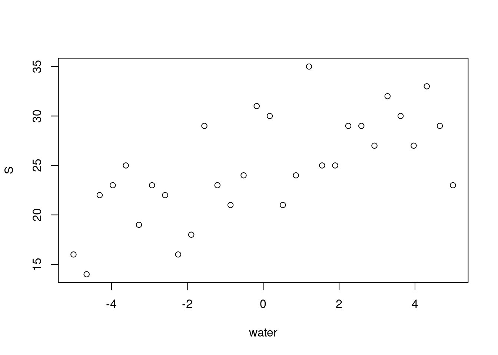

The following objects are masked from 'package:brms':
dstudent_t, pstudent_t, qstudent_t, rstudent_t
Gaussian random intercepts: Penguin body mass
Are populations of penguins on different islands different in their body mass?
The Palmer penguins are found on three different islands. Let’s look at the distribution of body mass of each species on each island.
Plot the data
First a bit of data cleaning and preparation: we select our variables and drop NA values in the predictors1. We’ll create a new variable out of the union of the species and island names2 We’ll also change the units of body mass to kilograms. You can always transform a variable to more sensible units!
penguin_mass_island <- penguins |>select(species, island, body_mass) |> tidyr::drop_na(body_mass) |> tidyr::unite(sp_island, species, island) |>## center mass and change the unitsmutate(mass_kg = (body_mass)/1000)knitr::kable(head(penguin_mass_island))
sp_island
body_mass
mass_kg
Adelie_Torgersen
3750
3.750
Adelie_Torgersen
3800
3.800
Adelie_Torgersen
3250
3.250
Adelie_Torgersen
3450
3.450
Adelie_Torgersen
3650
3.650
Adelie_Torgersen
3625
3.625
Let’s visualize the distribution of body sizes for these species+island combinations:
Here the subscript \(i\) is just counting the row of the dataset, and \(\text{group}[i]\) means the group (species+island) to which row number \(i\) belongs.
Simulate to understand this model
Here’s a little trick to get group indexes (numbers) from a character vector:
First, make a vector of unique names, then use these to label a numeric vector numbers 1 to \(n\), where \(n\) is the number of unique names:
Run the above code a few times, trying different prior values.
Write it in brms
To write this out in brms we perform the usual four steps:
Identify the data we’ll use
define the formula (bf())
define the prior (get_prior() and prior())
run the model (brm())
# dataglimpse(penguin_mass_island)# formulamass_sp_bf <-bf(mass_kg ~ sp_island, family ="gaussian")# prior# get_prior(mass_sp_bf, data = penguin_mass_island)
We have an issue! brms is enforcing some naming constraints on our variable names. This is because brms does a lot of work for us, and relies on standardized names to know how to handle different kinds of parameters.
# formulamass_sp_bf <-bf(mass_kg ~ SppIsland, family ="gaussian")# priorget_prior(mass_sp_bf, data = penguin_mass_island_rename)
prior class coef group resp dpar nlpar
(flat) b
(flat) b SppIslandAdelie_Dream
(flat) b SppIslandAdelie_Torgersen
(flat) b SppIslandChinstrap_Dream
(flat) b SppIslandGentoo_Biscoe
student_t(3, 4, 2.5) Intercept
student_t(3, 0, 2.5) sigma
lb ub tag source
default
(vectorized)
(vectorized)
(vectorized)
(vectorized)
default
0 default
peng_mass_prior <-c(prior(normal(5, 2), class ="Intercept"),prior(normal(0, 1), class ="b"),prior(exponential(.5), class ="sigma", lb =0))
We have two choices here. We could use the trick of removing the model intercept. This makes it simpler to set a prior, since we’re setting the prior on means and not on one mean and several differences. However, in our simulation we modelled an overall average and a difference to different
penguin_predicted_avgs <- penguin_mass_island_rename |>select(SppIsland) |>distinct() |> tidybayes::add_epred_rvars(peng_mass_brm)penguin_predicted_avgs |>ggplot(aes(xdist = .epred, y = SppIsland)) +stat_dist_halfeye()+geom_point(aes(x = mass_kg, y = SppIsland), data = penguin_mass_island_rename, position =position_jitter(height = .1), col ="orange",inherit.aes =FALSE)
Some things to notice about the code above:
We use tidybayes::stat_dist_halfeye() to summarize the posterior distribution.
we’re adding points from the original data (penguin_mass_island) with geom_jitter(). We’re adding noise vertically to make the visualization better, but not adding any horizontal noise.
EXERCISE: plot posterior predictions of observations
Repeat the exercise above using predicted observations, rather than the expected values for each group. Why are the results different? What additional error is included in these predictions?
SOLUTION
Plotting predicted values requires a change in two places:
changing from tidybayes::add_predicted_rvars to tidybayes::add_predicted_rvars
editing the ggplot2 code to use .prediction rather than .epred
penguin_predicted_avgs <- penguin_mass_island_rename |>select(SppIsland) |>distinct() |> tidybayes::add_predicted_rvars(peng_mass_brm)penguin_predicted_avgs |>ggplot(aes(xdist = .prediction, y = SppIsland)) +stat_dist_halfeye()+geom_point(aes(x = mass_kg, y = SppIsland), data = penguin_mass_island_rename, position =position_jitter(height = .1), col ="orange",inherit.aes =FALSE)
brms uses the familiar lme4 formula syntax to specify a random effect. So the model above goes from
# formulamass_sp_bf <-bf(mass_kg ~1+ SppIsland, family ="gaussian")
to the following
# formulamass_sp_bf <-bf(mass_kg ~1+ (1|SppIsland), family ="gaussian")
Simulation of a hierarchical model in R
EXERCISE
Simulate from the hierarchical model above. Base your approach on the code for simulation the non-hierarchical version Remember to simulate one additional number: the standard deviation of group differences Alternatively, attempt to simulate it using brms.
Warning: There were 4 divergent transitions after warmup. Increasing
adapt_delta above 0.8 may help. See
http://mc-stan.org/misc/warnings.html#divergent-transitions-after-warmup
Family: gaussian
Links: mu = identity
Formula: mass_kg ~ 1 + (1 | SppIsland)
Data: penguin_mass_island_rename (Number of observations: 342)
Draws: 4 chains, each with iter = 2000; warmup = 1000; thin = 1;
total post-warmup draws = 4000
Multilevel Hyperparameters:
~SppIsland (Number of levels: 5)
Estimate Est.Error l-95% CI u-95% CI Rhat Bulk_ESS Tail_ESS
sd(Intercept) 0.74 0.29 0.38 1.47 1.00 808 1346
Regression Coefficients:
Estimate Est.Error l-95% CI u-95% CI Rhat Bulk_ESS Tail_ESS
Intercept 4.04 0.36 3.32 4.80 1.01 683 696
Further Distributional Parameters:
Estimate Est.Error l-95% CI u-95% CI Rhat Bulk_ESS Tail_ESS
sigma 0.47 0.02 0.43 0.50 1.00 2225 1955
Draws were sampled using sampling(NUTS). For each parameter, Bulk_ESS
and Tail_ESS are effective sample size measures, and Rhat is the potential
scale reduction factor on split chains (at convergence, Rhat = 1).
# get info on the samplerlp_peng <-log_posterior(peng_mass_hier_brm)np_peng <-nuts_params(peng_mass_hier_brm)posterior_hier <-as.array(peng_mass_hier_brm)
:::{.callout-tip} ### EXERCISE Simulate from this model, and look at your simulations to decide on a reasonable prior for the data. :::
:::{.callout-note collapse=“true”} ### SOLUTION
n <-30water <-seq(from =-5, to =5, length.out = n)b0 <-rnorm(1, mean =log(17), sd = .3)b1 <-rnorm(1, mean =0, sd = .2)S <-rpois(n, lambda =exp(b0 + b1*water))plot(water, S)

:::
### Data preparation & visualization
First we need to load and prepare the data:
data(mite, package ="vegan")data("mite.env", package ="vegan")# combine data and environmentmite_data_long <- mite |> tibble::rownames_to_column(var ="site_id") |>bind_cols(mite.env) |>pivot_longer(Brachy:Trimalc2,names_to ="spp", values_to ="abd")
First let’s transform the mite dataset into a dataframe of total community abundance (N) per site. We’ll also standardize the water content while we’re at it:
`stat_bin()` using `bins = 30`. Pick better value `binwidth`.
mite_community_abd |>ggplot(aes(x = water_c, y = N)) +geom_point()
Footnotes
dropping NA values is not always the best idea! I’m doing it here to create a focused example. Bayes gives us other options for working with missing values, including modelling them directly.↩︎
again, this is slightly contrived for the sake of making a clean example! normally you’d treat these two variables separately.↩︎
Source Code
---title: "Models with one level of hierarchy"description: | Some of these things are somewhat like the others.execute: freeze: truecomments: hypothesis: trueformat: html: code-tools: trueeditor_options: chunk_output_type: console---:::{.callout-tip}## Bayesian workflow1. Visualize your data2. Decide on your model structure3. Simulate from the model to understand it4. Fit the model to the data5. Plot model predictions to evaluate the fit / draw conclusions:::Today's goal is to look at a couple of different model structures that we saw yesterday. ## Load packages and data```{r}suppressPackageStartupMessages(library(dplyr))library(ggplot2)library(tidyr)suppressPackageStartupMessages(library(brms))library(tidybayes)```## Gaussian random intercepts: Penguin body mass**Are populations of penguins on different islands different in their body mass?**The Palmer penguins are found on three different islands. Let's look at the distribution of body mass of each species on each island.### Plot the dataFirst a bit of data cleaning and preparation: we select our variables and drop NA values in the predictors^[dropping NA values is not always the best idea! I'm doing it here to create a focused example. Bayes gives us other options for working with missing values, including modelling them directly.].We'll create a new variable out of the union of the species and island names^[again, this is slightly contrived for the sake of making a clean example! normally you'd treat these two variables separately.]We'll also change the units of body mass to kilograms.You can always transform a variable to more sensible units! ```{r gauss-inter-setup}penguin_mass_island <- penguins |>select(species, island, body_mass) |> tidyr::drop_na(body_mass) |> tidyr::unite(sp_island, species, island) |>## center mass and change the unitsmutate(mass_kg = (body_mass)/1000)knitr::kable(head(penguin_mass_island))```Let's visualize the distribution of body sizes for these species+island combinations:```{r gauss-inter-plot}#| fig-cap: Observations of the mass of penguins on five different species-island combinations.penguin_mass_island |>ggplot(aes(y = sp_island,x = mass_kg,colour = sp_island)) +geom_jitter(alpha =0.8, height =0.1, width =0) +scale_color_brewer(palette ="Dark2") +labs(x ="Mass in kg", y ="Species_Island")```It's always good to ask some questions about the dataset. Here is a simple one: are the sample sizes equal among the species-island combinations?```{r}penguin_mass_island |>count(sp_island) |> knitr::kable()```### Decide on a model structureWe'll begin by fitting a model that assumes that body size for each of these five groups is completely independent:$$\begin{align}\text{Body mass}_i &\sim \text{Normal}(\mu_i, \sigma_{\text{obs}}) \\\mu_i &= \bar\beta + \beta_{\text{group}[i]} \\\bar\beta &\sim \text{Normal}(5, 2) \\\beta_{\text{group}} &\sim \text{Normal}(0, 1) \\\sigma_{\text{obs}} &\sim \text{Exponential}(.5)\end{align}$$Here the subscript $i$ is just counting the row of the dataset, and $\text{group}[i]$ means the group (species+island) to which row number $i$ belongs.### Simulate to understand this model {#sec-fixed-simulation}Here's a little trick to get group indexes (numbers) from a character vector:First, make a vector of unique names, then use these to label a numeric vector numbers 1 to $n$, where $n$ is the number of unique names:```{r}group_names <-unique(penguin_mass_island$sp_island)group_numbers <-seq_along(group_names)names(group_numbers) <- group_namesgroup_numbersgroup_numbers["Adelie_Dream"]```Now we have a named vector of sequential numbers, which means we can pull out a number by name.```{r}penguin_groupid <- penguin_mass_island |>mutate(group_id = group_numbers[sp_island])knitr::kable(head(penguin_groupid))```As you can see, we're set up now with the names and the indexes we need. Now we can simulate data and plot it:```{r}ngroup <-length(group_numbers)overall_mean <-rnorm(1, mean =5, sd =2)group_diffs <-rnorm(n = ngroup, mean =0, sd =1)sigma_obs <-rexp(1, .5)penguin_pred_obs <- penguin_groupid |>mutate(fake_mass_avg = overall_mean + group_diffs[group_id],fake_mass_obs =rnorm(length(fake_mass_avg), mean = fake_mass_avg, sd = sigma_obs))penguin_pred_obs |>ggplot(aes(y = sp_island,x = fake_mass_obs,colour = sp_island)) +geom_jitter(alpha =0.8, height =0.1, width =0) +scale_color_brewer(palette ="Dark2")```:::{.callout-tip}### EXERCISERun the above code a few times, trying different prior values. :::### Write it in brmsTo write this out in brms we perform the usual four steps:1. Identify the data we'll use1. define the formula (`bf()`)1. define the prior (`get_prior()` and `prior()`)1. run the model (`brm()`)```{r, eval=FALSE}# dataglimpse(penguin_mass_island)# formulamass_sp_bf <-bf(mass_kg ~ sp_island, family ="gaussian")# prior# get_prior(mass_sp_bf, data = penguin_mass_island)```We have an issue! `brms` is enforcing some naming constraints on our variable names. This is because `brms` does a lot of work for us, and relies on standardized names to know how to handle different kinds of parameters. ```{r}penguin_mass_island_rename <- penguin_mass_island |>rename(SppIsland = sp_island)glimpse(penguin_mass_island_rename)# formulamass_sp_bf <-bf(mass_kg ~ SppIsland, family ="gaussian")# priorget_prior(mass_sp_bf, data = penguin_mass_island_rename)peng_mass_prior <-c(prior(normal(5, 2), class ="Intercept"),prior(normal(0, 1), class ="b"),prior(exponential(.5), class ="sigma", lb =0))```We have two choices here. We could use the trick of removing the model intercept. This makes it simpler to set a prior, since we're setting the prior on means and not on one mean and several differences.However, in our simulation we modelled an overall average and a difference to different```{r}peng_mass_prior_brm <-brm(formula = mass_sp_bf, data = penguin_mass_island_rename,prior = peng_mass_prior,sample_prior ="only",file = here::here("topics/03_one_random_effect/peng_mass_prior_brm.rds"),file_refit ="on_change",refresh =0L)```let's look at the model summary```{r}summary(peng_mass_prior_brm)```As you can see, the values are close to the ones we set in the prior. let's look at model predictions as we've done before```{r}penguin_mass_island_rename |> tidybayes::add_predicted_draws(peng_mass_prior_brm, ndraws =6) |>ggplot(aes(x = .prediction, y = SppIsland)) +geom_point() +facet_wrap(~.draw)```very encouraging! These distributions show some variation, but are loosely within the range of the possible.### Fit the modelFitting the model now is simple, we only need to change the `sample_prior` argument.```{r}peng_mass_brm <-brm(formula = mass_sp_bf, data = penguin_mass_island_rename,prior = peng_mass_prior,sample_prior ="yes",file = here::here("topics/03_one_random_effect/peng_mass_brm.rds"),file_refit ="on_change",refresh =0L)summary(peng_mass_brm)```### Plot predictions to evaluate resultsLet's begin by plotting the averages for each group.```{r}# first look for the variable names in this modelget_variables(peng_mass_brm)penguin_predicted_avgs <- penguin_mass_island_rename |>select(SppIsland) |>distinct() |> tidybayes::add_epred_rvars(peng_mass_brm)penguin_predicted_avgs |>ggplot(aes(xdist = .epred, y = SppIsland)) +stat_dist_halfeye()+geom_point(aes(x = mass_kg, y = SppIsland), data = penguin_mass_island_rename, position =position_jitter(height = .1), col ="orange",inherit.aes =FALSE)```Some things to notice about the code above: * We use `tidybayes::stat_dist_halfeye()` to summarize the posterior distribution.* we're adding points from the original data (`penguin_mass_island`) with `geom_jitter()`. We're adding noise vertically to make the visualization better, but not adding any horizontal noise.:::{.callout-tip}### EXERCISE: plot posterior predictions of _observations_Repeat the exercise above using predicted ***observations***, rather than the expected values for each group. Why are the results different? What additional error is included in these predictions?::::::{.callout-note collapse="true"}### SOLUTIONPlotting predicted values requires a change in two places: 1. changing from `tidybayes::add_predicted_rvars` to `tidybayes::add_predicted_rvars`2. editing the ggplot2 code to use `.prediction` rather than `.epred````{r}penguin_predicted_avgs <- penguin_mass_island_rename |>select(SppIsland) |>distinct() |> tidybayes::add_predicted_rvars(peng_mass_brm)penguin_predicted_avgs |>ggplot(aes(xdist = .prediction, y = SppIsland)) +stat_dist_halfeye()+geom_point(aes(x = mass_kg, y = SppIsland), data = penguin_mass_island_rename, position =position_jitter(height = .1), col ="orange",inherit.aes =FALSE)```:::### Make it hierarchical#### Math:::{.column-screen}::::{.columns}::: {.column width="2.5%"}:::::: {.column width="45%"}$$\begin{align}\text{Body mass}_i &\sim \text{Normal}(\mu_i, \sigma_{\text{obs}}) \\\mu_i &= \bar\beta + \beta_{\text{group}[i]} \\\bar\beta &\sim \text{Normal}(5, 2) \\\beta_{\text{group}} &\sim \text{Normal}(0, 1) \\\sigma_{\text{obs}} &\sim \text{Exponential}(.5)\end{align}$$:::::: {.column width="5%"}:::::: {.column width="45%"}$$\begin{align}\text{Body mass}_i &\sim \text{Normal}(\mu_i, \sigma_{\text{obs}}) \\\mu_i &= \bar\beta + \beta_{\text{group}[i]} \\\bar\beta &\sim \text{Normal}(5, 2) \\\beta_{\text{group}} &\sim \text{Normal}(0, \sigma_{\text{sp}}) \\\sigma_{\text{obs}} &\sim \text{Exponential}(.5) \\\sigma_{\text{sp}} &\sim \text{Exponential}(1)\end{align}$$:::::: {.column width="2.5%"}::::::::::### Syntax for a Hierarchical model in `brms``brms` uses the familiar lme4 formula syntax to specify a random effect. So the model above goes from ```{r}# formulamass_sp_bf <-bf(mass_kg ~1+ SppIsland, family ="gaussian")```to the following ```{r}# formulamass_sp_bf <-bf(mass_kg ~1+ (1|SppIsland), family ="gaussian")```### Simulation of a hierarchical model in R :::{.callout-tip}### EXERCISE Simulate from the hierarchical model above. Base your approach on the [code for simulation the non-hierarchical version](#sec-fixed-simulation)Remember to simulate one additional number: the standard deviation of group differencesAlternatively, attempt to simulate it using brms.::::::{.callout-note collapse="true"}### SOLUTIONSimulation via R: ```{r}ngroup <-length(group_numbers)overall_mean <-rnorm(1, mean =5, sd =2)sigma_group <-rexp(1, .1)group_diffs <-rnorm(n = ngroup, mean =0, sd = sigma_group)sigma_obs <-rexp(1, .5)penguin_pred_obs <- penguin_groupid |>mutate(fake_mass_avg = overall_mean + group_diffs[group_id],fake_mass_obs =rnorm(length(fake_mass_avg), mean = fake_mass_avg, sd = sigma_obs))penguin_pred_obs |>ggplot(aes(y = sp_island,x = fake_mass_obs,colour = sp_island)) +geom_jitter(alpha =0.8, height =0.1, width =0) +scale_color_brewer(palette ="Dark2")```Simulation via brms:```{r}glimpse(penguin_mass_island_rename)# formulamass_hier_bf <-bf(mass_kg ~1+ (1|SppIsland), family ="gaussian")# priorget_prior(mass_hier_bf, data = penguin_mass_island_rename)peng_mass_hier_prior <-c(prior(normal(5, 2), class ="Intercept"),prior(exponential(1), class ="sd", lb =0),prior(exponential(1), class ="sigma", lb =0))peng_mass_prior_brm <-brm(formula = mass_hier_bf, data = penguin_mass_island_rename,prior = peng_mass_hier_prior,sample_prior ="only",file = here::here("topics/03_one_random_effect/peng_mass_prior_brm.rds"),file_refit ="on_change",refresh =0L)summary(peng_mass_prior_brm)```:::## Fitting the model in brms```{r}peng_mass_hier_brm <-brm(formula = mass_hier_bf, data = penguin_mass_island_rename,prior = peng_mass_hier_prior,sample_prior ="yes",file = here::here("topics/03_one_random_effect/peng_mass_hier_brm.rds"),file_refit ="on_change",refresh =0L)``````{r}summary(peng_mass_hier_brm)``````{r}tidybayes::get_variables(peng_mass_hier_brm)bayesplot::mcmc_areas(peng_mass_hier_brm,pars =c("sd_SppIsland__Intercept", "prior_sd_SppIsland"))```### Diagnostics```{r}# get info on the samplerlp_peng <-log_posterior(peng_mass_hier_brm)np_peng <-nuts_params(peng_mass_hier_brm)posterior_hier <-as.array(peng_mass_hier_brm)``````{r}bayesplot::color_scheme_set("darkgray")bayesplot::mcmc_parcoord(posterior_hier, np = np_peng) +# coord_flip() + coord_cartesian(ylim =c(-2, 10)) +NULL```We can look at divergent iterations in two dimensions here:```{r}bayesplot::mcmc_pairs(posterior_hier,np = np_peng, pars =c("sd_SppIsland__Intercept","b_Intercept","sigma"),off_diag_args =list(size =0.75))``````{r}bayesplot::mcmc_trace(posterior_hier, pars ="sd_SppIsland__Intercept")``````{r}bayesplot::mcmc_trace(posterior_hier, pars ="b_Intercept")```### Sample for a new groupWe can make predictions in the same way that we did previously:```{r}penguin_predicted_hier_avgs <- penguin_mass_island_rename |>select(SppIsland) |>distinct() |> tidybayes::add_epred_rvars(peng_mass_hier_brm)penguin_predicted_hier_avgs |>ggplot(aes(xdist = .epred, y = SppIsland)) +stat_dist_halfeye()+geom_point(aes(x = mass_kg, y = SppIsland), data = penguin_mass_island_rename, position =position_jitter(height = .1), col ="orange",inherit.aes =FALSE)```But we can also make predictions for an entirely new group```{r}penguin_predicted_hier_avgs_NEW <- penguin_mass_island_rename |>select(SppIsland) |>distinct() |>bind_rows(data.frame(SppIsland ="Adelie_Ireland")) |> tidybayes::add_epred_rvars(peng_mass_hier_brm, allow_new_levels =TRUE, sample_new_levels ="gaussian")penguin_predicted_hier_avgs_NEW |>ggplot(aes(xdist = .epred, y = SppIsland)) +stat_dist_halfeye()+geom_point(aes(x = mass_kg, y = SppIsland), data = penguin_mass_island_rename, position =position_jitter(height = .1), col ="orange",inherit.aes =FALSE)```## Observation-level random effects: Mite abundance### What is the question? Let's write a model to answer the question: **How does the total abundance of the mite community change as water content increases?** ### Express this in MathHere's a partially complete model for species richness over time$$ \begin{align}\text{S}_i &\sim \text{Poisson}(e^a) \\a &= \bar\beta + \beta_{\text{water}} \cdot \text{water}_i \\\bar\beta &\sim \text{Normal}(?, ?) \\\beta_{\text{water}} &\sim \text{Normal}(?, ?) \\\end{align}$$ :::{.callout-tip}### EXERCISE Simulate from this model, and look at your simulations to decide on a reasonable prior for the data.::: :::{.callout-note collapse="true"}### SOLUTION```{r}n <-30water <-seq(from =-5, to =5, length.out = n)b0 <-rnorm(1, mean =log(17), sd = .3)b1 <-rnorm(1, mean =0, sd = .2)S <-rpois(n, lambda =exp(b0 + b1*water))plot(water, S)```::: ### Data preparation & visualization First we need to load and prepare the data:```{r}data(mite, package ="vegan")data("mite.env", package ="vegan")# combine data and environmentmite_data_long <- mite |> tibble::rownames_to_column(var ="site_id") |>bind_cols(mite.env) |>pivot_longer(Brachy:Trimalc2,names_to ="spp", values_to ="abd")```First let's transform the mite dataset into a dataframe of total community abundance (N) per site. We'll also standardize the water content while we're at it:```{r}mite_community_abd <- mite_data_long |>group_by(site_id, WatrCont) |>summarize(N =sum(abd)) |>ungroup() |>mutate(water_c = (WatrCont -mean(WatrCont))/100)knitr::kable(head(mite_community_abd))```We get a nice histogram of community abundance, and a clear negative relationship with water volume:```{r}#| layout-ncol: 2mite_community_abd |>ggplot(aes(x = N)) +geom_histogram()mite_community_abd |>ggplot(aes(x = water_c, y = N)) +geom_point()```